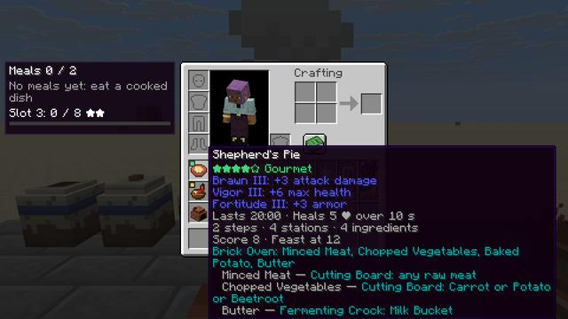
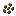
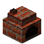

How it plays
Everything Full Course changes, with the numbers the game uses.
No hunger
The food bar is gone. Sprinting always works, nobody starves, and any food can be eaten at any time. Where the food bar was, a row of meal slots shows what you have eaten.
Recovery takes the place of natural regeneration: 8 seconds after you last took damage, you heal 1 HP every 4 seconds. Taking damage starts the wait again. Mending meals shorten the 4 seconds.
Food heals over time: a food heals as many HP as its hunger value, one a second (a steak heals 8 HP over 8 seconds). Heals don't stack: a new one replaces the running heal only when it would heal more.
The natural_health_regeneration gamerule still works: turned off, nothing heals on its own, neither
Recovery nor food. Healing potions, golden apples and other effects still work.
Tiers: effort is the price
Every food has a tier from Raw to Feast. The tier comes from the food's recipe chain: the longest chain of steps down to raw ingredients, the stations it uses, and how many different raw ingredients go in. A food takes its cheapest recipe, and a placed meal (a feast, a cake) gets three more points, since setting it out is a step too.
| Stars | Tier | Score | What a meal gives |
|---|---|---|---|
| ☆☆☆☆☆ | Raw | 0 | heals only |
| ★☆☆☆☆ | Simple | 1–2 | 1 benefit at level I, 2 min |
| ★★☆☆☆ | Prepared | 3–4 | 2 benefits at level I, 5 min |
| ★★★☆☆ | Hearty | 5–7 | 2 benefits at level II, 10 min |
| ★★★★☆ | Gourmet | 8–11 | 3 benefits at level III, 20 min |
| ★★★★★ | Feast | 12+ | 3 benefits at level IV, 30 min (level III, +1 feast bonus) |
The tooltip shows it all: the stars, the benefits and how long they last, and, holding Shift, the recipe chain (steps, stations, ingredients) and the score. A steak is Simple; rabbit stew and cake, vanilla's best, are Hearty; a Shepherd's Pie from the Brick Oven is Gourmet.


Meal slots
You start with two meal slots. Eating a dish of one star or more fills a slot; eating the same dish again refreshes it. With every slot full, a new dish replaces the meal with the least time left. Raw food and remedies (golden apples and the like) heal but take no slot.
Benefits of the same family don't add up: the strongest level wins. So the best loadout is a varied one.
Meals are not potion effects: milk doesn't clear them. They are lost when you die, unless the server keeps them.
The meal row sits where the food bar was: each meal's dish in a frame of its tier's colour, with a ring that drains as its time runs out, an empty frame for each free slot and a padlock for each locked one. Holding a dish shows which slot it would fill or replace.
Benefit families
A dish's benefits come from what went into it. Each ingredient group feeds one family; a dish gives as many families as its tier allows, at its tier's level. Full Course's own dishes list theirs on the dishes page; other mods' foods count the groups among their ingredients.
| Family | Per level | At level IV | From |
|---|---|---|---|
| +1 attack damage | +4 | meat | |
| +2 max health (1 heart) | +8 (4 hearts) | vegetables, onion, kelp, pumpkin | |
| Fortitude | +1 armor | +4 | dairy and eggs |
| Swift | +5% speed | +20% | fruit and berries |
| Diligence | +10% mining speed | +40% | grain, flour, bread |
 Fortune | +1 luck (better fishing) | +4 | sweets: sugar, honey, cocoa |
| Tide | +1 respiration, 15% less water drag | +4, 60% | fish |
| night vision | night vision | mushrooms, glow berries | |
| Ember | −20% burning time | −80% | Nether ingredients: Ember Pepper, nether wart, crimson and warped fungus |
| +2 blocks of safe fall, +5% jump | +8, +20% | End ingredients: chorus | |
| +50% Recovery | +200% | broth (bone), and every soup |
Fortune is luck, which vanilla uses only for fishing. Night Eye keeps night vision on while the meal lasts. Mending at level II halves the time between Recovery heals.
The kitchen
Cutting Board
Use food on it to place it, then use a knife on it: the pieces pop out and the knife takes one use. A Flint Knife has 64 uses, an Iron Knife 250, and other mods' knives work too. Crafted from two wooden slabs and a stick.
Cooking Pot
Six ingredient slots and a slot for the bowl or bottle the dish is served in. It cooks over heat below it: a lit campfire, fire, magma or lava, or a lit furnace, smoker or blast furnace. Without heat it says so. Ten seconds a dish. Crafted from five iron ingots, a bucket and two sticks.

Brick Oven
Four ingredients and fuel, like a furnace: fifteen seconds a dish. Pies, bakes, Nether Flatbread and the feasts. Crafted from six bricks blocks around a furnace.
Fermenting Crock
Use ingredients on it, then an empty hand to seal it. Half a day later (sleeping counts) it holds butter, cheese, sweet cream or pickles. No fuel. Crafted from five terracotta and a wooden slab.
Hoppers work the stations like a furnace: ingredients go in from the top, the dish comes out below, and from the side a hopper adds the Brick Oven's fuel or the Cooking Pot's bowls and bottles. A hopper under a pot passes the heat up from the block under it.
Two crops go with the kitchen. Onions grow wild in plains, meadows, forests, taiga and savannas and are planted on farmland. Ember Peppers grow wild in crimson forests and are planted on soul soil, in any dimension.
Every recipe is on the dishes page; with JEI installed, each station has its own recipe category.
The Tasting Journal
Craft a book with any simple dish. The journal shows every dish the game knows, the ones you've tasted
in colour and the rest grey, with the tier, the benefits and the recipe chain on hover, and a search box (@mod
searches by mod). Tasting counts even without the journal; the journal is the window.
| Slot | Needs |
|---|---|
| 3rd | 8 different dishes of two stars or more |
| 4th | 15 different dishes of three stars or more |
| 5th | 20 different dishes of three stars or more, and a serving from a feast |
A toast and a chime mark each new slot. What you have tasted is kept when you die.
Feasts and cake
A feast is placed on a block and served by using it: 8 servings for the Roast Banquet, 6 for the Harvest Pie, 4 for the Glow Berry Tart. Each serving is a five-star meal for whoever takes it, and each player can take one helping every five minutes, so a feast feeds the group rather than whoever holds the button. The last serving leaves an empty platter (the tart leaves nothing).
Cake stays vanilla's block, and each slice is a three-star meal (Fortune and Diligence II), one slice per player every five minutes.
What changes in vanilla
| Vanilla | With Full Course |
|---|---|
| Hunger (rotten flesh, raw chicken, husks) | Renamed Queasy: while it lasts, Recovery pauses and food heals but gives no meal. |
| Saturation | Heals instead of filling the food bar. |
| Golden apples, suspicious stew, honey bottle, chorus fruit | Remedies: their own effects and the heal, no meal slot. |
| Milk | Clears potion effects as always; meals stay. |
| Other mods' food | Rated from its recipes; its own effects still apply. |
| Farmer villagers | Plant onions too. |
| Animals, breeding, the composter | Unchanged. |
Commands
/fullcourse tier [item]: a food's tier, score and benefits, for the item named or the one in your hand./fullcourse meals [player]: the meals you hold, your meal slots, how many dishes you have tasted and the next slot. Naming another player needs operator rights./fullcourse unlock <players> <slots>(operators): raises the players' meal slots to that many, up to the server's maximum. It never takes slots away.